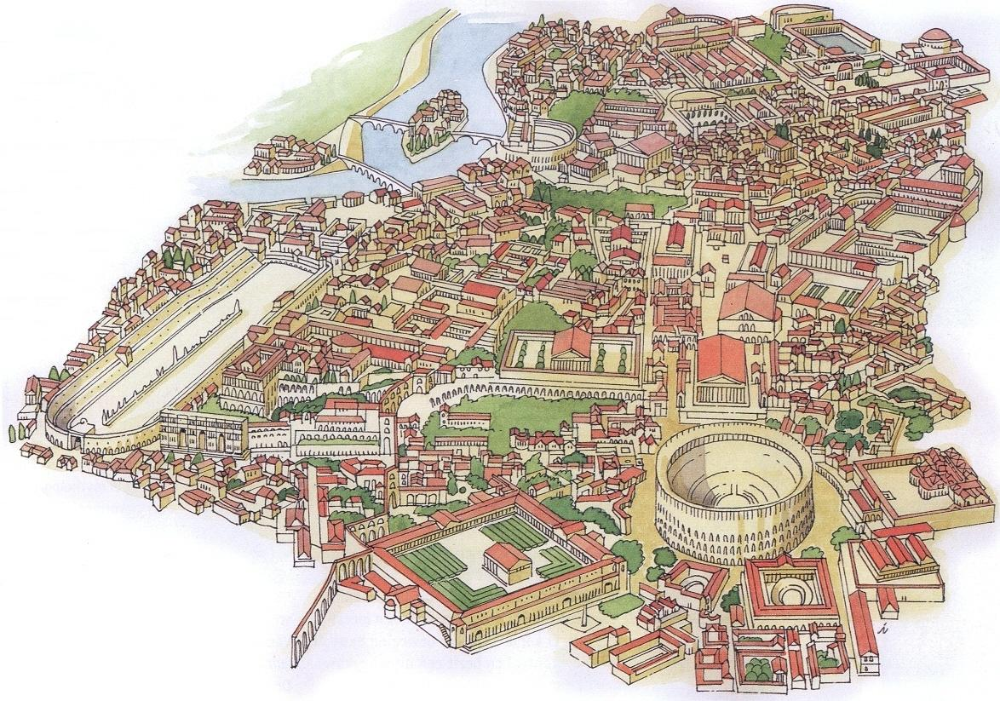

In het Westen van Rome stroomt de rivier de Tiber. In het Zuid-Westen van Rome lag de haven (Latijn: Emporium). Tussen de heuvels Aventijn en Palatijn lag het Circus Maximus. In het dal van de Palatijn lag het Colosseum, en ten Westen van het Colosseum lag het Forum Romanum, dat tevens het centrum van Rome was. De thermen zaten vooral aan de rand van de stad. In en rond het centrum waren veel tempels gebouwd. De meeste theaters werden ten Westen van het Forum Romanum gebouwd. De mausolea werden aan de rand van de stad gebouwd.